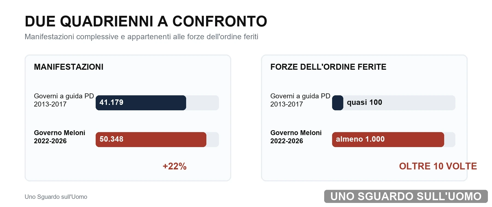
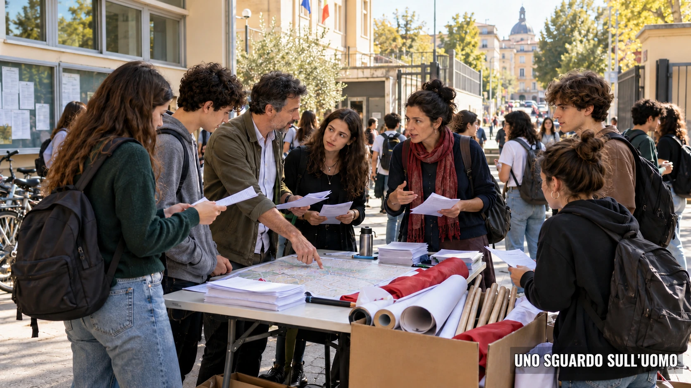

Il 17 ottobre 2026 il processo descritto in questo dossier è diventato un fatto nazionale. Durante le mobilitazioni di Italia in Piazza, gruppi di giovani hanno attaccato le forze dell'ordine con pietre, bottiglie, bombe carta, transenne e altri oggetti. Il bilancio comunicato dalla Polizia di Stato è di 141 appartenenti alle forze dell'ordine feriti, 28 arrestati, dei quali 12 minorenni, 43 denunciati e 197 identificati o accompagnati negli uffici.
In questo dossier
- Il 17 ottobre come punto di arrivo
- La pressione politica ha una struttura
- I numeri delle manifestazioni
- Quattro anni contro quattro anni
- Quasi millequattrocento mobilitazioni studentesche
- La minoranza non rappresenta tutti gli studenti
- La rete che porta gli studenti in piazza
- Il sindacato finanzia e organizza
- La scuola come moltiplicatore politico
- Dalla massa al nucleo violento
- Cronologia degli episodi principali
- Quando il dissenso diventa coercizione
- La sproporzione tra fascismo evocato e violenza osservata
- Fatti e conseguenza editoriale
- Quando i nonni finanziano i nipoti
- Conclusione
- Fonti
Il 17 ottobre come punto di arrivo
La violenza non ha avuto bisogno di una regia unica e visibile. La convocazione è circolata soprattutto attraverso Instagram e TikTok; nelle piazze si sono incontrati studenti, giovanissimi richiamati dai social, collettivi locali, centri sociali e componenti antagoniste. A Milano altri ragazzi sono arrivati dopo l'inizio dei disordini, attratti dalla circolazione immediata delle immagini. La mobilitazione ha iniziato ad alimentarsi da sola.
La pressione politica sui giovani di sinistra è diventata un'arma senza controllo. Una minoranza abituata a ricevere messaggi di emergenza, repressione e scontro può trasformare una convocazione generica in un'occasione di guerriglia urbana, anche senza che un'organizzazione tradizionale impartisca un ordine diretto. Il 17 ottobre non rappresenta tutti gli studenti: rende visibile ciò che può produrre una componente politicizzata quando il linguaggio dell'opposizione continua ad attribuirle la voce dell'intera generazione.
La pressione politica ha una struttura
Le manifestazioni contro il governo Meloni sono sostenute da una struttura politica organizzata e collocata a sinistra. Organizzazioni studentesche, sedi sindacali, assemblee, docenti militanti, reti universitarie, centri sociali, partiti e amministratori alimentano e legittimano la protesta. Le sigle appartengono alla sinistra studentesca e sindacale oppure all'area comunista e antagonista; si ritrovano sulle stesse campagne, sugli stessi calendari e negli stessi cortei.
Il punto decisivo è ciò che accade prima dello scontro. Un tema nazionale viene portato nelle scuole e nelle università. Le organizzazioni della sinistra studentesca lo trasformano in assemblee, occupazioni, scioperi e giornate di mobilitazione. I sindacati offrono continuità, risorse, canali e copertura politica. Partiti, amministratori e associazioni amplificano la convocazione. Nella massa così mobilitata operano poi gruppi antagonisti più piccoli, addestrati a muoversi compatti, coprire il volto, forzare i percorsi e cercare il contatto con le forze dell'ordine.
La scuola e l'università vengono così trasformate ciclicamente in un bacino di opposizione. Migliaia di giovani vengono portati in piazza; i nuclei radicali ricevono la folla, il tema e la visibilità necessari per alzare il livello dello scontro. Il 17 ottobre mostra il passaggio successivo: il linguaggio accumulato e la mobilitazione social possono produrre violenza anche attraverso gruppi fluidi, giovanissimi e privi di un comando pubblico riconoscibile.
La filiera della mobilitazione
| Fase | Attore | Funzione | Strumenti osservati |
|---|---|---|---|
| 1 | Soggetti politici e istituzionali | Definiscono il governo come bersaglio e danno legittimità pubblica alla mobilitazione | Convocazioni, presenze in piazza, dichiarazioni, richieste di dimissioni |
| 2 | Sindacati | Forniscono risorse, reti territoriali, strutture scolastiche e continuità organizzativa | Contributi economici, patti di lavoro, scioperi, materiali, assemblee |
| 3 | Docenti e reti scolastiche | Portano il tema politico nell'ambiente educativo e lo traducono in attività rivolte agli studenti | Lezioni, assemblee, cartelli preparati in classe, accompagnamento ai cortei |
| 4 | Organizzazioni studentesche | Trasformano la campagna in una convocazione riconoscibile e nazionale | Scioperi studenteschi, occupazioni, cortei, comunicazione social |
| 5 | Collettivi antagonisti | Usano il corteo più ampio come spazio operativo e cercano obiettivi sensibili | Deviazioni, volti coperti, aste, pietre, bombe carta, tentativi di sfondamento |
| 6 | Rete politica e mediatica | Dopo l'intervento di polizia sposta il centro del racconto dalla violenza alla repressione | Accuse di autoritarismo, fascismo e limitazione del dissenso |
I numeri delle manifestazioni
La serie riunisce gli anni interi dal 2022 al 2025 e il primo semestre 2026. Il bilancio nazionale del 17 ottobre aggiorna il numero complessivo delle forze dell'ordine ferite.
| Periodo | Manifestazioni | Criticità | Incidenza | Forze dell'ordine ferite |
|---|---|---|---|---|
| 2022 anno intero | 12.479 | 388 | 3,1% | 146 |
| 2023 anno intero | 11.219 | 397 | 3,5% | 120 |
| 2024 anno intero | 12.302 | 322 | 2,6% | 273 |
| 2025 | 8.635 | 240 | 2,8% | 325 |
| 2026 primo semestre | 5.713 | 98 | 1,7% | 136 |
| Totale con il 17 ottobre | 50.348 | 1.445 | 2,9% | almeno 1.141 |
Quattro anni contro quattro anni
Il confronto mette in relazione due periodi di quattro anni: il quadriennio dal 1 agosto 2013 al 31 luglio 2017, durante i governi a guida Partito Democratico, e la serie dal 2022 al 2026 durante il governo Meloni.
Il quadriennio dei governi a guida Partito Democratico (PD)
| Periodo | Governo prevalente | Manifestazioni | Con disordini |
|---|---|---|---|
| 1 ago 2013–31 lug 2014 | Letta e Renzi | 9.774 | 573 |
| 1 ago 2014–31 lug 2015 | Renzi | 10.285 | 543 |
| 1 ago 2015–31 lug 2016 | Renzi | 11.106 | 454 |
| 1 ago 2016–31 lug 2017 | Renzi e Gentiloni | 10.014 | 403 |
| Totale quadriennio | Governi a guida PD | 41.179 | 1.973 |
Il numero delle manifestazioni cresce del 22 per cento, ma le forze dell'ordine ferite aumentano di oltre dieci volte. La maggiore frequenza delle proteste non basta quindi a spiegare la crescita della violenza contro gli agenti.

Manifestazioni e forze dell'ordine ferite nei due quadrienni
Le criticità diminuiscono ma gli attacchi diventano più lesivi
La tendenza annuale mostra che gli eventi problematici diminuiscono mentre cresce la loro capacità di produrre feriti. Il 17 ottobre concentra in una sola giornata nazionale più feriti di quanti ne fossero stati registrati nell'intero primo semestre 2026.
| Periodo | Eventi critici | Feriti | Feriti per evento critico |
|---|---|---|---|
| 2023 | 397 | 120 | 0,30 |
| 2024 | 322 | 273 | 0,85 |
| 2025 | 240 | 325 | 1,35 |
| 2026 primo semestre | 98 | 136 | 1,39 |
Nel 2025 la concentrazione politica è ancora più evidente. Le manifestazioni riguardanti la pace sono state 2.304; in 84 si sono registrati problemi di ordine pubblico e 242 appartenenti alle forze dell'ordine sono rimasti feriti. In dieci giorni se ne contano 146. Una parte decisiva del danno fisico si concentra nelle mobilitazioni costruite intorno alla guerra a Gaza e sostenute da reti studentesche, sindacali e antagoniste.
Quasi millequattrocento mobilitazioni studentesche
Tra il 2022 e il 2026 le mobilitazioni classificate come studentesche sono circa 1.400. La tabella ne mostra la distribuzione annuale disponibile.
| Periodo | Manifestazioni studentesche | Quota o natura del dato |
|---|---|---|
| 2022 | 523 | 4,2% |
| 2023 | 391 | 3,5% |
| 2024 | 269 | 2,2% |
| Totale ufficiale 2022 2024 | 1.183 | |
| Totale 2022 2026 | circa 1.400 | stima complessiva |
Il peso reale degli studenti è superiore alla sola categoria amministrativa delle manifestazioni studentesche. La relazione al Parlamento sul 2023 registra una partecipazione attiva e assidua degli studenti anche alle manifestazioni pacifiste e ambientaliste. I partecipanti e le sigle mostrano quindi una presenza giovanile più ampia di quella contenuta nella classificazione formale degli eventi.

La minoranza non rappresenta tutti gli studenti
Le piazze violente non rappresentano la popolazione studentesca italiana. Rappresentano una minoranza organizzata che appartiene alla sinistra studentesca, sindacale, comunista e antagonista. Usare la parola giovani senza indicarne la collocazione politica trasforma quella minoranza nella voce artificiale di un'intera generazione.
Il contrapposto rende evidente la differenza. Le mobilitazioni studentesche riconducibili alla destra incluse nel censimento sono state poche e si sono svolte pacificamente. Le iniziative pubbliche rintracciate hanno riguardato problemi concreti, come il costo e l'inefficienza del trasporto pubblico o la denuncia della propaganda politica nelle scuole, senza produrre una sequenza equivalente di aggressioni alle forze dell'ordine, assalti a infrastrutture, deviazioni organizzate, barricate o arresti di minorenni. L'età dei partecipanti non spiega quindi la violenza; la differenza è l'ambiente politico che organizza, orienta e legittima la protesta.
Quando l'opposizione sostiene che i giovani non vengono ascoltati, parla in realtà della propria area politica e le attribuisce una rappresentanza generale che non possiede. La minoranza violenta non rappresenta tutti gli studenti: rappresenta sempre più chiaramente l'opposizione che la mobilita, ne rilancia le parole d'ordine e, dopo gli scontri, presenta le sue azioni come conseguenza dell'esasperazione prodotta dal governo.
La rete che porta gli studenti in piazza
Le principali sigle censite appartengono tutte alla sinistra nelle sue diverse articolazioni. Alcune agiscono come sindacati studenteschi, altre come organizzazioni comuniste o anticapitaliste, altre ancora come collettivi territoriali e reti antagoniste. La collaborazione avviene attraverso campagne comuni, assemblee, occupazioni, scioperi e presenze incrociate nelle manifestazioni.
| Sigla | Ambito | Area della sinistra e funzione |
|---|---|---|
| Unione degli Studenti (UdS) | Scuole superiori | Sinistra studentesca e sindacalismo studentesco |
| LINK Coordinamento universitario | Università | Sinistra universitaria e campagne nazionali |
| Rete della Conoscenza | Scuola e università | Sinistra studentesca; rete nazionale che collega UdS e LINK |
| Rete degli Studenti Medi (RSM) | Scuole superiori | Sinistra studentesca e sindacale; patto di lavoro con Unione degli Universitari (UDU) e Confederazione Generale Italiana del Lavoro (CGIL) |
| Unione degli Universitari (UDU) | Università | Sinistra universitaria e sindacale; collegamento con RSM e CGIL |
| Opposizione Studentesca d'Alternativa (OSA) | Scuole superiori | Organizzazione comunista rivoluzionaria |
| Cambiare Rotta | Università | Organizzazione comunista e anticapitalista |
| Fronte della Gioventù Comunista (FGC) | Scuola e università | Organizzazione marxista leninista |
| Giovani Comunisti e Comuniste | Giovani | Organizzazione giovanile di Rifondazione Comunista |
La componente antagonista
Accanto alle organizzazioni nazionali operano collettivi e centri sociali con una funzione operativa. Il Collettivo Universitario Autonomo di Bologna, Askatasuna a Torino, TPO e Làbas a Bologna, Lambretta a Milano, Newroz a Pisa, Zaum e Aracne a Roma garantiscono continuità militante, addestramento politico e organizzazione territoriale. Quando la piazza di massa si muove, questi ambienti forniscono il blocco più compatto e disposto a forzare il dispositivo di sicurezza.
I movimenti tematici allargano ulteriormente il bacino. Fridays for Future, Extinction Rebellion, Ultima Generazione, Non Una Di Meno, Giovani Palestinesi e Students for Palestine portano cause differenti dentro lo stesso spazio giovanile. Mantengono gli studenti in mobilitazione permanente e fanno convergere clima, guerra, femminismo, antifascismo e opposizione al governo nello stesso calendario.
Il sindacato finanzia e organizza
Il legame economico tra la Confederazione Generale Italiana del Lavoro (CGIL) e le organizzazioni studentesche è scritto nei bilanci. I contributi destinati all'Unione degli Universitari (UDU) e alla Rete degli Studenti mostrano un sostegno continuativo, non occasionale.
| Anno | Prima voce | Seconda voce | Totale Unione degli Universitari (UDU) e Rete degli Studenti (REDS) |
|---|---|---|---|
| 2019 | UDU 88.085 euro | Rete degli Studenti 79.000 euro | 167.085 euro |
| 2020 | UDU 80.000 euro | Rete degli Studenti 60.000 euro | 140.000 euro |
| 2024 | Contributo 130.000 euro | Straordinario UDU 5.613 euro | 135.613 euro |
La CGIL finanzia organizzazioni studentesche che promuovono e partecipano alle manifestazioni. La mobilitazione studentesca dispone così di denaro, relazioni, strutture e continuità provenienti da una delle maggiori organizzazioni politiche e sociali del Paese. Il rapporto materiale tra sindacato e piazza studentesca è scritto nei bilanci.
Unione Sindacale di Base (USB), Opposizione Studentesca d'Alternativa (OSA) e Cambiare Rotta
L'Unione Sindacale di Base (USB) costruisce apertamente il rapporto politico con Opposizione Studentesca d'Alternativa (OSA) e Cambiare Rotta. Le tre sigle promuovono scioperi, assemblee e mobilitazioni comuni nelle scuole e nelle università. Nel 2025 USB sostiene il No Meloni Day; nel 2026 definisce il rapporto con OSA e Cambiare Rotta un'alleanza politica per costruire un blocco sociale. Il sostegno organizzativo e la convergenza politica formano una struttura stabile di mobilitazione.
Il sindacato oltre i diritti dei lavoratori
La funzione sindacale si estende ormai molto oltre la contrattazione sul lavoro. Guerra a Gaza, politica estera, decreto sicurezza, antifascismo, governo, immigrazione e campagne ambientali entrano nei documenti, negli scioperi e nelle piazze. Il sindacato usa la propria presenza nella scuola e nell'università per saldare rivendicazioni professionali e opposizione politica. Le bandiere sindacali nei cortei studenteschi non sono un dettaglio scenografico: rendono visibile questa infrastruttura.
La scuola come moltiplicatore politico
Il passaggio più delicato riguarda i docenti. Un insegnante possiede autorità, tempo, accesso continuativo e credibilità verso studenti minorenni. Quando usa questa posizione per trasformare una causa politica in lezione, assemblea, materiale di classe o partecipazione al corteo, non si limita a esprimere un'opinione personale. Porta quella causa dentro una relazione educativa asimmetrica e moltiplica la capacità di mobilitazione delle organizzazioni esterne.
| Luogo e data | Soggetti | Condotta documentata |
|---|---|---|
| Napoli settembre 2025 | Federazione Lavoratori della Conoscenza CGIL | Assemblea su Gaza e invito a realizzare lezioni di pace nelle scuole |
| Bologna settembre 2025 | Circa 500 docenti | Impegno pubblico a portare la questione palestinese negli istituti e a parlare agli studenti |
| Milano ottobre 2025 | Docente e studenti | Partecipazione comune a una manifestazione con cartelli preparati in classe |
| Italia novembre 2025 | USB OSA Cambiare Rotta | Documento per trenta piazze che collega docenti studenti sciopero studentesco e sciopero generale |
| Torino ottobre 2026 | Docenti in testa al corteo | Cordone di insegnanti davanti agli studenti durante i momenti di tensione con la polizia |
La pressione politica passa attraverso il lavoro quotidiano di una rete di insegnanti. I docenti selezionano i temi, attribuiscono loro un significato morale univoco, costruiscono attività collettive e presentano la partecipazione come risposta civile necessaria. Le organizzazioni studentesche ricevono così giovani già orientati, un linguaggio comune e una ragione per uscire dalle aule.
Dalla massa al nucleo violento
Una manifestazione pacifica rispetta il percorso concordato e non cerca il contatto fisico con il dispositivo di sicurezza. Quando un blocco devia, copre il volto, usa aste, raccoglie pietre, forza un cordone o punta verso un ministero, una stazione, una prefettura, una questura o un quartiere sensibile, sta modificando lo scopo reale del corteo. In quel momento l'intervento delle forze dell'ordine non crea la deviazione: tenta di impedirla.
La folla offre tre vantaggi al nucleo antagonista. Riduce la possibilità di isolamento preventivo, rende più difficile l'intervento selettivo e produce immagini nelle quali la reazione della polizia può essere separata dalla condotta che l'ha preceduta. Il corteo di massa diventa quindi uno scudo fisico e narrativo. Gli organizzatori ottengono visibilità e pressione; il gruppo radicale ottiene spazio operativo; l'opposizione politica ottiene immagini da usare contro il governo.
Pisa e la costruzione del racconto repressivo
Il 23 febbraio 2024 a Pisa un corteo studentesco pro Palestina si dirige verso piazza dei Cavalieri senza il percorso concordato. Nell'informativa al Senato il ministro dell'Interno ricostruisce i tentativi di interlocuzione, l'ordine di fermarsi, l'avanzata del corteo e la pressione sul cordone. Le immagini delle cariche diventano immediatamente il centro del racconto politico. Esponenti dell'opposizione parlano di clima repressivo e chiedono conto al governo, mentre la sequenza precedente scompare quasi del tutto dalla comunicazione pubblica.
Questo passaggio è parte della pressione. Prima si contesta il percorso imposto dall'autorità di pubblica sicurezza; poi si forza il limite; infine si usa l'intervento necessario a ristabilire il limite come prova dell'autoritarismo del governo. La strategia rende politicamente costosa qualsiasi risposta delle forze dell'ordine e aumenta il valore mediatico della disobbedienza.
Cronologia degli episodi principali
| Data | Città | Promotori e contesto | Condotta o conseguenza | Area |
|---|---|---|---|---|
| 11 febbraio 2023 | Milano | Area anarchica per Alfredo Cospito | 6 forze dell'ordine ferite | Anarchica e antagonista |
| 4 marzo 2023 | Torino | Movimenti anarchici per Cospito | 2 forze dell'ordine ferite | Anarchica e antagonista |
| 13 febbraio 2024 | Torino | Studenti pro Palestina e antagonisti | Tentativo di forzare il cordone e 7 agenti feriti | Studentesca e antagonista |
| 23 febbraio 2024 | Pisa | Corteo studentesco pro Palestina | Percorso non concordato pressione sul cordone e cariche | Studentesca |
| 24 febbraio 2024 | Milano | Corteo pro Palestina | 1 agente della polizia locale ferito | Pro Palestina |
| 23 aprile 2024 | Torino | Studenti pro Palestina | 7 agenti feriti | Studentesca e antagonista |
| 5 ottobre 2024 | Roma | Manifestazione pro Palestina vietata | Lanci e scontri 34 forze dell'ordine ferite | Pro Palestina e antagonista |
| 7 ottobre 2024 | Torino | Studenti e antagonisti pro Palestina | 3 forze dell'ordine ferite | Studentesca e antagonista |
| 9 novembre 2024 | Bologna | Corteo contro CasaPound | 3 agenti feriti | Antagonista |
| 15 novembre 2024 | Torino | Corteo studentesco | Assalto alla Mole e 15 agenti feriti | Studentesca |
| 13 dicembre 2024 | Torino | Studenti pro Palestina | 2 agenti feriti | Studentesca |
| 5 aprile 2025 | Roma | Corteo contro il decreto sicurezza | 2 agenti feriti | Antagonista |
| 22 settembre 2025 | Milano | Sciopero e corteo pro Gaza | Assalto alla Stazione Centrale e 60 feriti | Studentesca sindacale antagonista |
| 14 novembre 2025 | Torino | No Meloni Day | Lanci tentativi di sfondamento e 8 agenti feriti | Studentesca e antagonista |
| 31 gennaio 2026 | Torino | Manifestazione per Askatasuna | 108 feriti tra le forze dell'ordine | Estrema sinistra e antagonista |
| 20 luglio 2026 | Bologna | Piazza per il caso Fakir | Barricate incendi lanci e scontri | Istituzionale e antagonista |
| 16 ottobre 2026 | Più città | No Meloni Day | Lanci arresti di minori e feriti | Studentesca e antagonista |
| 17 ottobre 2026 | Milano Torino Bologna Brescia Bergamo | Italia in Piazza e mobilitazione giovanile diffusa attraverso i social | 141 forze dell'ordine ferite 28 arresti di cui 12 minorenni 43 denunce | Giovanile studentesca social e antagonista |
Milano e l'assalto alla Stazione Centrale
Il 22 settembre 2025 un gruppo uscito dal corteo pro Gaza tenta di entrare nella Stazione Centrale e usa oggetti e parti di impalcature contro polizia e carabinieri. Il bilancio è di 60 feriti tra le forze dell'ordine. Tra le persone arrestate o fermate compaiono due minorenni delle scuole superiori e due studentesse universitarie di 21 e 22 anni. Le successive misure cautelari confermano che non si trattò di una semplice tensione improvvisa. Il caso unisce sciopero, partecipazione studentesca, reti pro Palestina e azione organizzata contro un'infrastruttura nazionale.
No Meloni Day e il bersaglio dichiarato
Il nome stesso della mobilitazione del 14 novembre 2025 elimina ogni ambiguità. Non è uno sciopero costruito intorno a un problema scolastico preciso, ma una giornata nazionale contro il presidente del Consiglio e il governo. USB sostiene la mobilitazione. OSA, Cambiare Rotta e collettivi locali compaiono nelle piazze. A Torino vengono usati uova, estintori, tombini e altri oggetti; otto agenti restano feriti. A Roma e Bologna si registrano ulteriori tentativi di pressione sui dispositivi di sicurezza.
Askatasuna e il salto di intensità
Il 31 gennaio 2026 Torino mostra il livello che può raggiungere una rete antagonista organizzata. Il bilancio ufficiale è di 108 feriti tra le forze dell'ordine, 96 della Polizia di Stato, 5 carabinieri e 7 finanzieri. Un agente viene accerchiato e colpito anche con un martello. Il Senato riferisce che le autorità avevano previsto l'arrivo di manifestanti violenti legati all'estrema sinistra e agli ambienti antagonisti. Un solo evento produce quasi l'80 per cento dei feriti registrati nelle piazze del 2026.
Bologna e la legittimazione istituzionale
Il 20 luglio 2026 il sindaco di Bologna Matteo Lepore convoca una manifestazione cittadina per il caso Fakir. Alla piazza partecipano circa quattromila persone. Dopo la parte civica, un blocco antagonista si muove verso Prefettura e Questura, usa bottiglie, aste, fumogeni e bombe carta, costruisce barricate e appicca incendi. La convocazione istituzionale crea la massa, il luogo e la legittimazione pubblica che il blocco antagonista sfrutta per alzare il livello dello scontro.
Padova e la violenza preparata
Alla vigilia del corteo studentesco del 16 ottobre 2026 la Direzione Investigazioni Generali e Operazioni Speciali (DIGOS) individua una chat WhatsApp con 1.025 utenti. Secondo le cronache, alcuni minorenni discutono passamontagna, vestiti neri, incendi di cassonetti, petardi, fumogeni, un possibile attacco alla Questura e saccheggi. Le perquisizioni portano al sequestro di telefoni, passamontagna e spray. Il corteo, promosso dalla Rete degli Studenti Medi e partecipato da circa duemila persone, si svolge poi senza incidenti. La conclusione è precisa: la violenza era stata progettata da una componente giovanile ed è stata impedita dall'intervento preventivo.
Il 17 ottobre e la violenza autoalimentata
Il giorno successivo il controllo preventivo non basta più. La mobilitazione Italia in Piazza porta nelle strade migliaia di persone. A Milano una sassaiola, bombe carta e tentativi di forzare i cordoni precedono le cariche; seguono barricate, incendi, assalti ai negozi e la distruzione di un mezzo dei Carabinieri. A Torino vengono trovate bottiglie incendiarie, petardi, pietre e martelletti frangivetro. A Bologna gruppi di ragazzini incappucciati attaccano il dispositivo davanti alla stazione. Episodi violenti si registrano anche a Brescia e Bergamo.
La rete nazionale di convocazione è Italia in Piazza, nata sui social e presentata come apartitica. In alcune città emergono collegamenti comunicativi con il Fronte Rivoluzionario Italiano; a Torino sono presenti collettivi studenteschi, centri sociali, comitati antifascisti e sindacati di base. Le appartenenze dei singoli arrestati non sono state rese pubbliche. Questo dato non indebolisce la ricostruzione: mostra che la pressione accumulata può ormai produrre gruppi mobili che si riconoscono nello stesso linguaggio senza dipendere da una tessera o da una direzione unica.
La condanna che dura una frase
Dopo gli scontri del 16 ottobre, Giorgia Meloni chiede alle opposizioni una condanna esplicita delle aggressioni alle forze dell'ordine. La risposta dei principali esponenti del campo largo segue uno schema riconoscibile: la violenza viene ignorata oppure condannata rapidamente, per poi trasferire immediatamente l'accusa sul Governo e trasformare la protesta in una piattaforma politica.
Elly Schlein non risponde nel merito al primo appello. Non pronuncia parole contro chi ha lanciato pietre, bottiglie e petardi; sposta invece l'attenzione sulle condizioni degli studenti, sugli affitti, sugli edifici scolastici e sulle responsabilità dell'esecutivo. Il giorno seguente compie il passaggio successivo: accusa Meloni di criminalizzare il dissenso e indica nella piazza il luogo dal quale costruire l'alternativa politica.
Non è silenzio. È una scelta comunicativa precisa. La responsabilità di chi ha commesso le violenze scompare dal centro del discorso, mentre gli incidenti diventano l'occasione per accusare il Governo di non ascoltare i giovani.
Giuseppe Conte pronuncia la condanna che Schlein evita: afferma che le violenze vanno condannate sempre, senza condizioni. Ma la condanna occupa una frase. Tutto ciò che segue serve a rovesciare il bersaglio: il Governo, secondo Conte, utilizzerebbe gli incidenti per nascondere i propri fallimenti, mentre destina miliardi alle armi e non interviene contro il caro carburante e gli extraprofitti delle società energetiche. Gli autori delle aggressioni vengono formalmente condannati, ma la responsabilità del clima che ha portato in piazza gli studenti viene immediatamente trasferita sull'esecutivo.
Angelo Bonelli adotta la stessa struttura. Condanna senza ambiguità ogni forma di violenza, poi chiede a Meloni di scusarsi con studenti e insegnanti. Parla di scuole insicure, docenti sottopagati e miliardi destinati al riarmo. Dopo i nuovi scontri ribadisce che la violenza non ha la sua approvazione, ma torna subito a chiedere al Governo risposte alla crisi sociale. La condanna resta formalmente intatta; politicamente, però, viene assorbita dall'accusa rivolta all'esecutivo.
Nicola Fratoianni interviene soprattutto sul significato politico della mobilitazione. Insieme a Bonelli interpreta la piazza della Confederazione Generale Italiana del Lavoro (CGIL) come l'inizio di una nuova fase dell'opposizione e chiede alle altre forze del campo largo di organizzare un'ulteriore manifestazione unitaria. La loro dichiarazione è esplicita: il programma dell'alternativa deve incontrare la mobilitazione delle persone. La piazza non viene quindi considerata soltanto un luogo nel quale ascoltare il disagio, ma lo strumento con cui costruire il progetto politico destinato a sostituire il Governo.
È in questo punto che le dichiarazioni dei principali leader del campo largo convergono. Schlein legittima politicamente la protesta; Conte e Bonelli pronunciano una condanna seguita dall'accusa al Governo; Fratoianni e Bonelli chiedono di trasformare la mobilitazione nella piattaforma dell'alternativa. Nessuno rivendica la violenza, ma tutti cercano di conservare la forza politica prodotta dalla piazza.
Maurizio Landini dispone dello strumento più concreto. Il segretario della CGIL condanna chi scende in piazza con il volto coperto per provocare disordini, ma subito riconduce quelle condotte alla crescita della rabbia sociale. Nella stessa giornata, dal palco della manifestazione sindacale, annuncia lo sciopero generale del 20 novembre, facendolo coincidere con la mobilitazione europea degli studenti.
La condanna, quindi, non interrompe la pressione: la accompagna e la rilancia su scala nazionale. Landini separa formalmente il sindacato dagli autori materiali delle violenze, ma mantiene intatta la macchina della mobilitazione. La CGIL non è un osservatore esterno: sostiene economicamente organizzazioni come l'Unione degli Universitari (UDU) e la Rete degli Studenti Medi, ne condivide le rivendicazioni e offre alle iniziative studentesche una struttura politica e organizzativa nazionale.
I ruoli sono diversi ma complementari. Landini organizza e moltiplica la pressione attraverso la struttura sindacale e lo sciopero; Schlein le offre rappresentanza politica; Conte ne traduce le ragioni in un'accusa diretta al Governo; Bonelli e Fratoianni chiedono di trasformarla nella piattaforma dell'alternativa.
La responsabilità che emerge è politica. Questi leader non impartiscono pubblicamente l'ordine di aggredire le forze dell'ordine, ma costruiscono, legittimano e rilanciano la pressione nella quale una parte dei giovani agisce. Prima descrivono la loro condizione come insopportabile, poi indicano nel Governo il responsabile, sostengono la mobilitazione e, quando una parte della piazza esplode, pronunciano una condanna sufficiente a prendere le distanze dagli autori materiali. Subito dopo, la stessa rabbia viene nuovamente interpretata, organizzata e convocata per l'appuntamento successivo.
La violenza viene respinta a parole, mentre la pressione politica che l'accompagna viene conservata e rilanciata. È così che il disagio degli studenti smette di essere soltanto una domanda rivolta alle istituzioni e diventa un'arma dell'opposizione: una forza giovane e numerosa, della quale nessuno rivendica gli eccessi, ma della quale il campo largo e il sindacato continuano a utilizzare l'urto.
Quando il dissenso diventa coercizione
La pressione non si esercita soltanto in strada. Nel novembre 2024, all'Università Statale di Milano, un convegno intitolato Accogliere la vita viene impedito da studenti riconducibili a UDU, Studenti Indipendenti, Cambiare Rotta e Rebelot. Le cronache descrivono ingresso forzato, spinte, minacce, acqua lanciata, luci e microfoni disattivati, fino all'annullamento. UDU prende le distanze dagli eccessi ma difende l'azione politica. L'episodio mostra il passaggio dalla protesta alla soppressione materiale della parola altrui.
Il collegamento con il sindacato è diretto. UDU è finanziata dalla CGIL e partecipa alla mobilitazione che, nel caso documentato dell'Università Statale di Milano, sfocia in un'azione coercitiva contro un convegno. Le risorse sindacali sostengono quindi un'organizzazione inserita materialmente nella rete che rende possibile l'azione.
La sproporzione tra fascismo evocato e violenza osservata
Il fascismo viene presentato da una parte della sinistra come una minaccia quotidiana e capillare. Il caso simbolo del periodo è la commemorazione di Acca Larentia del gennaio 2024, con circa duecento persone che eseguono il saluto romano. Il gesto può avere rilievo politico e giudiziario, ma non è un'aggressione fisica e non produce feriti. Duecento persone rappresentano circa lo 0,00034 per cento della popolazione italiana, una ogni trecentomila persone.
La sproporzione emerge nel confronto con le piazze violente. Mentre l'allarme sul fascismo si concentra su un gesto simbolico compiuto da poche centinaia di militanti della destra radicale, gli episodi riconducibili all'area studentesca, antagonista e pro Palestina producono centinaia di feriti tra le forze dell'ordine, assalti a stazioni, tentativi di raggiungere ministeri e questure, barricate, incendi e arresti di minorenni. La visibilità politica assegnata ai due fenomeni non segue la loro capacità concreta di produrre violenza.
Fatti e conseguenza editoriale
I fatti documentati
- Nel quadriennio 2013-2017 furono censite 41.179 manifestazioni, 1.973 con disordini e quasi 100 appartenenti alle forze dell'ordine feriti; nella serie 2022-2026 le manifestazioni sono 50.348, le criticità 1.445 e i feriti almeno 1.141 includendo il 17 ottobre.
- Il 17 ottobre 2026 le mobilitazioni di Italia in Piazza hanno prodotto 141 feriti tra le forze dell'ordine, 28 arresti, dei quali 12 minorenni, 43 denunce e 197 identificati o accompagnati.
- La convocazione nazionale è stata diffusa soprattutto attraverso Instagram e TikTok e ha mobilitato studenti, giovanissimi, gruppi informali e componenti antagoniste.
- Le mobilitazioni studentesche tra il 2022 e il 2026 sono circa 1.400.
- Le principali organizzazioni studentesche censite appartengono alla sinistra studentesca e sindacale oppure all'area comunista e antagonista.
- Le mobilitazioni studentesche di destra incluse nel censimento si sono svolte pacificamente.
- La CGIL finanzia UDU e Rete degli Studenti attraverso contributi iscritti nei propri bilanci.
- USB dichiara una collaborazione politica e organizzativa con OSA e Cambiare Rotta.
- Docenti e strutture sindacali hanno promosso lezioni, assemblee e partecipazioni studentesche su campagne politiche nazionali e internazionali.
- Dopo gli scontri esponenti dell'opposizione condannano la violenza ma presentano la propria minoranza politica come i giovani che il governo non ascolterebbe.
- Nei principali episodi violenti compaiono minorenni, studenti universitari, collettivi antagonisti e sigle dell'estrema sinistra.
La deduzione editoriale
La sinistra esercita una parte sostanziale dell'opposizione al governo attraverso la piazza e usa la componente studentesca come moltiplicatore. I soggetti della rete svolgono funzioni complementari: il sindacato finanzia e organizza, il docente introduce e legittima, la sigla studentesca convoca, il partito amplifica, il centro sociale porta il nucleo operativo. La formula i giovani non descrive la maggioranza degli studenti, ma attribuisce alla minoranza mobilitata dalla sinistra una rappresentanza che non possiede. Il 17 ottobre mostra che, una volta consolidati linguaggio e bersaglio, quella mobilitazione può sfuggire anche alla struttura che l'ha alimentata e produrre gruppi spontanei che imitano, amplificano e diffondono la violenza attraverso i social.
Il meccanismo si è manifestato
Il 17 ottobre dimostra che questa mobilitazione è già diventata l'ambiente politico normale di una parte della generazione più giovane. Ragazzi che per anni hanno ascoltato il governo descritto come autoritario, fascista, complice di guerre o nemico della scuola incontrano sui social una convocazione priva di gerarchie riconoscibili e la trasformano in un terreno di scontro. L'esito non richiede più una direzione centrale: bastano il linguaggio comune, il bersaglio politico e l'imitazione immediata delle immagini provenienti dalle altre città.
Il precedente delle Brigate Rosse (BR) ricorda dove può condurre la normalizzazione progressiva della violenza politica. Il paragone non riguarda la forma organizzativa, che oggi è diversa, ma il terreno culturale: l'avversario trasformato in nemico illegittimo, l'aggressione resa comprensibile, la rete che offre relazioni e protezione narrativa. Il 17 ottobre aggiunge un elemento contemporaneo: i social permettono alla violenza di propagarsi e coordinarsi anche senza una struttura clandestina tradizionale.
Quando i nonni finanziano i nipoti
La CGIL non si limita ad affiancare alcune organizzazioni studentesche. Il suo bilancio documenta contributi economici destinati a UDU e Rete degli Studenti. Da dove provenga e come venga distribuita la forza finanziaria del sindacato è una questione affrontata nel dossier La povertà contagiosa, che ricostruisce gli oltre 515 milioni di euro trattenuti ogni anno dalle pensioni attraverso le deleghe sindacali.
Conclusione
Il 17 ottobre è la conseguenza di un ambiente politico costruito attraverso risorse, autorità educative, reti organizzate e comunicazione social. La pressione non riguarda i giovani in generale: opera dentro una rete della sinistra studentesca, sindacale, comunista e antagonista. Sindacati, organizzazioni studentesche, docenti, collettivi e soggetti politici mantengono quella pressione; quando il loro linguaggio raggiunge gruppi giovanissimi e privi di una struttura stabile, la mobilitazione può autoalimentarsi e diventare più difficile da controllare.
Il risultato si misura sulle forze dell'ordine. Rispetto al quadriennio dei governi a guida PD, le manifestazioni aumentano del 22 per cento, mentre gli appartenenti alle forze dell'ordine feriti passano da quasi 100 ad almeno 1.141. Il 17 ottobre ne aggiunge 141 in una sola giornata nazionale e porta in primo piano dodici minorenni arrestati. Non siamo più davanti soltanto a nuclei militanti adulti che sfruttano una folla: la violenza è entrata direttamente nel repertorio di gruppi adolescenti mobilitati attraverso i social.
La pressione politica sui giovani di sinistra è un'arma senza controllo perché continua a produrre effetti anche quando chi l'ha alimentata non controlla più la piazza. Presentare ogni conflitto come emergenza morale, il governo come nemico e l'intervento delle forze dell'ordine come repressione riduce progressivamente i freni. La condanna pronunciata dopo gli scontri non neutralizza questo processo se viene accompagnata dalla spiegazione che la violenza sarebbe la conseguenza comprensibile di giovani non ascoltati. Quella formula assolve politicamente una minoranza e la confonde con milioni di studenti che non hanno aggredito nessuno. Il 17 ottobre mostra che il passaggio dalla pressione organizzata alla violenza autoalimentata è già avvenuto.
FONTI
- Ministero dell'Interno, Comitato nazionale per l'ordine e la sicurezza pubblica al Viminale presieduto da Piantedosi, 19 dicembre 2022.
- Camera dei deputati e Senato della Repubblica, Relazione al Parlamento sull'attività delle Forze di polizia e sullo stato dell'ordine e della sicurezza pubblica, anno 2022.
- Camera dei deputati e Senato della Repubblica, Relazione al Parlamento sull'attività delle Forze di polizia e sullo stato dell'ordine e della sicurezza pubblica, anno 2023.
- Camera dei deputati, Servizio Studi, Relazione al Parlamento sull'attività delle Forze di polizia e sullo stato dell'ordine e della sicurezza pubblica, anno 2024, dossier dicembre 2025.
- Dipartimento della Pubblica Sicurezza, Dati sulle manifestazioni nel 2024 e dal 1 gennaio al 5 ottobre 2025, 6 ottobre 2025.
- Camera dei deputati, intervento del ministro dell'Interno Matteo Piantedosi sulle manifestazioni dei primi dieci mesi del 2025, 10 dicembre 2025.
- Ministero dell'Interno, dati sull'ordine pubblico nel primo semestre 2026, dossier di Ferragosto 2026.
- Ministero dell'Interno, Informativa del ministro sui fatti avvenuti in occasione delle manifestazioni di Pisa e Firenze, 29 febbraio 2024.
- Ministero dell'Interno, Piantedosi nel corso di questo governo ci sono state più manifestazioni e meno incidenti, 2024.
- Ministero dell'Interno, Sull'ordine pubblico non abbiamo cambiato le regole, 25 febbraio 2024.
- Confederazione Generale Italiana del Lavoro, Bilancio consuntivo 2024, 2025.
- Confederazione Generale Italiana del Lavoro, Bilanci 2019 e 2020, pubblicati nel 2021.
- Unione degli Universitari, Chi siamo e patto di lavoro con Rete degli Studenti Medi e CGIL, consultato nel 2026.
- Unione Sindacale di Base Scuola, Formare un mondo diverso elezioni CSPI e sciopero scuola, 2024.
- Unione Sindacale di Base, 22 settembre 2025 una giornata di mobilitazione senza precedenti, 2025.
- Unione Sindacale di Base Scuola, sostegno alla mobilitazione studentesca No Meloni Day, 14 novembre 2025.
- Unione Sindacale di Base Scuola, Al Sierra Maestra di OSA e Cambiare Rotta studenti e lavoratori uniti, luglio 2026.
- Federazione Lavoratori della Conoscenza CGIL Napoli, Occhi su Gaza e assemblea dei lavoratori della conoscenza, settembre 2025.
- Corriere di Bologna, Gaza il movimento dei professori di Bologna esce dalle aule, 23 settembre 2025.
- la Repubblica Milano, Professoressa in piazza per la Palestina con gli alunni, 5 ottobre 2025.
- ANSA, Violenza al corteo per Gaza assaltata la Stazione Centrale di Milano, 22 settembre 2025.
- RaiNews Lombardia, Tre arresti per gli scontri in Stazione Centrale, settembre 2025.
- ANSA Lombardia, Scontri a manifestazione pro Palestina a Milano arresti in corso, 13 maggio 2026.
- RaiNews, No Meloni Day studenti in corteo in varie città italiane, 14 novembre 2025.
- RaiNews, No Meloni Day otto agenti feriti, 14 novembre 2025.
- la Repubblica Torino, Studenti in corteo per il No Meloni Day, 14 novembre 2025.
- Senato della Repubblica, comunicazioni del ministro dell'Interno sugli scontri di Torino del 31 gennaio 2026, 4 febbraio 2026.
- ANSA, Scontri a Torino feriti oltre cento agenti delle forze dell'ordine, 1 febbraio 2026.
- ANSA, La piazza si infiamma a Bologna scontri tra manifestanti e agenti, 20 luglio 2026.
- RaiNews, Bologna manifestazione per il caso Fakir dalla piazza agli scontri con la polizia, 20 luglio 2026.
- Senato della Repubblica, atto di sindacato ispettivo sugli scontri di Bologna, 2026.
- Corriere della Sera Milano, Università Statale il convegno Accogliere la vita bloccato da studenti, 27 novembre 2024.
- ANSA, Perquisizioni DIGOS a Padova in vista del corteo studentesco, 15 ottobre 2026.
- Il Mattino di Padova, Corteo studentesco e chat sugli scontri, ottobre 2026.
- RaiNews Veneto, Padova manifestazione partecipata e pacifica, 16 ottobre 2026.
- ANSA, Gli studenti si prendono le piazze e le violenze da condannare, 16 ottobre 2026.
- ANSA, Tre minorenni arrestati al corteo studentesco a Torino, 16 ottobre 2026.
- RaiNews Emilia Romagna, Il centro di Bologna bloccato dalle manifestazioni studentesche, 16 ottobre 2026.
- LegnanoNews, Identificati tre studenti dopo i disordini, 16 ottobre 2026.
- RaiNews, Acca Larentia saluti romani alla commemorazione opposizioni all'attacco, 8 gennaio 2024.
- ANSA, Acca Larentia Donzelli sui saluti romani duecento imbecilli utili solo alla sinistra, 9 gennaio 2024.
- UNO SGUARDO SULL'UOMO, La povertà contagiosa quando la povertà di uno finisce per impoverire anche chi gli sta più vicino, 2026.
- Ministero dell'Interno, Dossier Viminale di Ferragosto, dati 1 agosto 2013–31 luglio 2014, 15 agosto 2014.
- Ministero dell'Interno, Dossier Viminale di Ferragosto, dati 1 agosto 2014–31 luglio 2015, 15 agosto 2015.
- Ministero dell'Interno, Dossier Viminale di Ferragosto, dati 1 agosto 2015–31 luglio 2016, 15 agosto 2016.
- Ministero dell'Interno, Dossier Viminale di Ferragosto, dati 1 agosto 2016–31 luglio 2017, 15 agosto 2017.
- Dipartimento della Pubblica Sicurezza, bilancio nazionale delle manifestazioni Italia in Piazza del 17 ottobre 2026, comunicato il 18 ottobre 2026.
- RaiNews, Guerriglia a Milano Bologna e Torino Polizia 197 identificati 28 arresti e 43 denunce, 18 ottobre 2026.
- Sky TG24, Guerriglia a Milano e in altre città cosa sappiamo sugli scontri e sui ragazzi in piazza, 18 ottobre 2026.
- Corriere della Sera Milano, Chi sono i manifestanti degli scontri in piazza Duomo giovanissimi non politicizzati e violenti, 17 ottobre 2026.
- Corriere di Bologna, Il bilancio degli scontri alla manifestazione di Bologna, 18 ottobre 2026.
- RaiNews Piemonte, Piazza Castello avvolta in una nube di fumogeni, 17 ottobre 2026.
- Corriere della Sera Milano, Scontri in piazza le reazioni politiche, 17 ottobre 2026.
- Il Friuli, Contro il carovita Udine in piazza come in Francia e Spagna, 15 ottobre 2026.
- RaiNews Piemonte, Azione Studentesca contro il caro prezzi blitz a Torino, 20 luglio 2023.
- RaiNews, Il questionario sugli insegnanti di sinistra e il nuovo conflitto sulla scuola, 28 gennaio 2026.
- Il Giornale, Persino Bonelli condanna le violenze ma Schlein e Conte attaccano Meloni, 16 ottobre 2026.
- ANSA, Abbraccio Conte Schlein in piazza prepariamo l'alternativa, 17 ottobre 2026.
- ANSA, CGIL in piazza siamo centomila il 20 novembre sciopero generale, 17 ottobre 2026.
- Il Domani d'Italia e Askanews, Cortei Landini chi va in piazza per fare disordini danneggia il diritto di manifestare, 17 ottobre 2026.
- Libero, Realpolitik Bonelli violenza in piazza disapprovo ma il Governo dia risposte, 17 ottobre 2026.
- la Repubblica, Meloni contro la sinistra basta essere ambigui il Partito Democratico no alle violenze, 18 ottobre 2026.
- ANSA, Appello di Alleanza Verdi e Sinistra alle opposizioni per una manifestazione unitaria, 18 ottobre 2026.